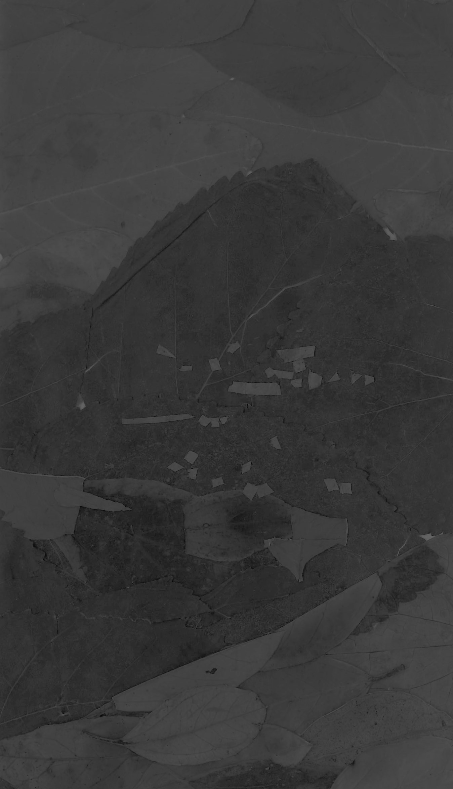

AMALFI COAST, ITALY
Bus Schedule
I'm starting to get nauseous...
I actually have a bag if you need one.
Are you sure?
Yeah, please, take it. It's empty.
Location:
Materials:
Bus schedule
Journal entry
After a full day of hiking in the sun, I found myself seated on the last bus back to my hostel in Sorrento next to an American woman fanning herself and complaining of nausea on the windy coastal roads. I carry bags with me everywhere, along with silverware, napkins, pens, and hair ties, since they're ALWAYS useful. All those items have made my life easier at one point or another, but I think this incidence tops the list of moments I was most glad to be prepared. About two minutes after I lent this woman a bag, she pitched over and hurled her whole stomach into it right next to me on this packed bus. Through a pounding headache and heavy revulsion I managed to smile politely and graciously accept her repeated thanks and attempts at small talk.

I've never climbed so many stairs in one day
in my goddamn life. 180 floors. Have you ever
descended 1,200 stairs consecutively?
I have now.
It's a truly singular experience.
Positano
Location:
Materials:
Leaves from the Sentiero Degli Dei
Journal entry
Scribbling this down very quickly to remember this moment forever. I’m on an outcropping along the Path of the Gods on the Amalfi Coast. This is so beautiful. The solitude is so full and round and smooth. People are down below – but I’m up here. My toes are sore and covered in dirt. Geckos slip across rocks. Insects twitter in the brush around. The golden hour is fading but this moment is so perfect and beautiful and just what I wanted my life to be like. Everything below is so still from far away. I know my cell phone camera could never capture what I’m witnessing as the sun sets behind one of the hills across the way. No hike I take will compare to this one for a long, long time. I wish I could capture it and return to right now whenever I wanted.
I think I may wonder forever
how past generations ever navigated in strange places and foreign lands
without a cellular GPS function
Amalfi Coast
Location:
Materials:
Bus tickets, alcohol marker, reciepts
Journal entry
Sometimes, I decide not to take pictures of things when I feel on a whim that they’re sacred. When something is quiet and beautiful and small and touches me in a special way, I want that moment to be just between my memory and that place, no one else. I want to be the only one to snap that moment and turn it into an artifact before it’s lost forever to time. There’s something magical about that to me. The fact that no one, no matter how close to me, will ever know the entirety of my person - they’ll never know every birch tree I’ve fallen in love with for a moment when I caught it illuminated just right in the evening sun. I’m ultimately alone in this city, in the world, in the universe, and there’s nothing more freeing than that idea. This phase of my life is one four-year love note to myself and my independence.